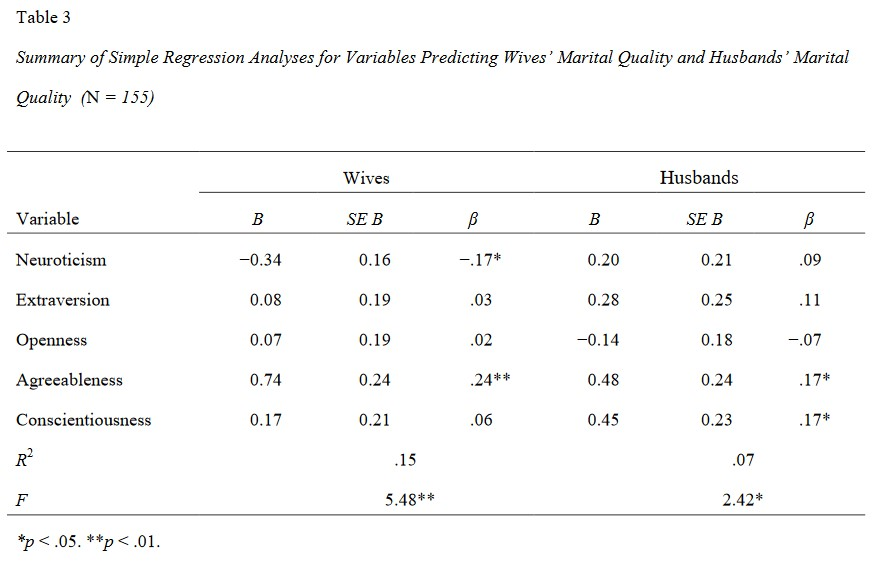
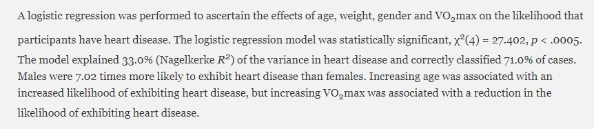
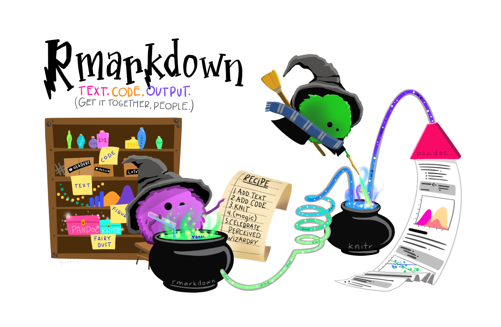

# import tidyverse library
library(tidyverse)
library(gtsummary)
library(huxtable)
# read the CSV with Chile voting data
wvs_data <- read_csv("data-output/wvs_processed.csv")
# Convert categorical variables to factors
wvs_data <- wvs_data |>
mutate(across(c("country", "sex", "marital_status",
"employment", "religiousity"), as.factor))
# peek at the data
glimpse(wvs_data)Regression and Introduction to Quarto
Bella Ratmelia
Today’s Outline
- Simple Linear Regression in R
- Binary Logistic Regression in R
- Create your manuscript with Quarto
Load our data for today!
Simple Linear Regression
Simple Linear Regression: what is it?
Linear regression is a statistical method used to model the relationship between a dependent variable (outcome) and one or more independent variables (predictors) by fitting a linear equation to the observed data. The math formula looks like this:
\[ Y = \beta_0 + \beta_1X + \varepsilon \]
- \(Y\) - the dependent variable; must be continuous
- \(X\) - the independent variable (if there are more than one, there will be \(X_1\) , \(X_2\) , and so on. This can be ordinal, nominal, or continuous
- \(\beta_0\) - the y-intercept. Represents the expected value of independent variable \(Y\) when independent variable(s) \(X\) are set to zero.
- \(\beta_1\) - the slope / coefficient for independent variable
- \(\varepsilon\) - the error term. (In some examples you might see this omitted from the formula).
Examples:
- Does a person’s age affect their income?
- Do a person’s age and education level affect their income?
Linear Regression: One continuous predictor
Research Question: Does a person’s financial satisfaction influence their life satisfaction?
- The outcome/DV (\(Y\)):
life_satisfaction - The predictor/IV (\(X\)):
financial_satisfaction
- Call: the formula
- Residuals: overview on the distribution of residuals (expected value minus observed value) – we can plot this to check for homoscedasticity -
- Coefficients: shows the intercept, the regression coefficients for the predictor variables, and their statistical significance
- Residual standard error: the average difference between observed and expected outcome by the model. Generally the lower, the better.
- R-squared & Adjusted R-squared: indicates the proportion of variation in the outcome that can be explained by the model (i.e. goodness of fit).
- F-statistics: indicates whether the model as a whole is statistically significant and whether it explains more variance than just the baseline (intercept-only) model.
Linear Regression: One continuous predictor
Call:
lm(formula = life_satisfaction ~ financial_satisfaction, data = wvs_data)
Residuals:
Min 1Q Median 3Q Max
-7.9299 -0.7854 0.1423 0.7507 5.8953
Coefficients:
Estimate Std. Error t value Pr(>|t|)
(Intercept) 3.568566 0.055538 64.25 <2e-16 ***
financial_satisfaction 0.536137 0.008002 67.00 <2e-16 ***
---
Signif. codes: 0 '***' 0.001 '**' 0.01 '*' 0.05 '.' 0.1 ' ' 1
Residual standard error: 1.385 on 6401 degrees of freedom
Multiple R-squared: 0.4122, Adjusted R-squared: 0.4121
F-statistic: 4489 on 1 and 6401 DF, p-value: < 2.2e-16Narrating the results
Here is one possible way to narrate your result:
A linear regression analysis was conducted to assess the influence of age on support for the incumbent (statusquo) in Chile. The coefficient for age was 0.008 (SE = 0.001), indicating that for each additional year of age, support for the incumbent increased by 0.008 units. This effect was statistically significant at p < 0.001.
The model explained a small portion of the variance in support for the statusquo (R² = 0.013, Adjusted R² = 0.012). The F-statistic was 30.85 (p < 0.001), further suggesting that age is a significant predictor of support for the incumbent.
Present the regression tables!
Linear Regression: Multiple continuous predictors
Research Question: Do a person’s financial satisfaction and perceived freedom influence their life satisfaction?
- The outcome/DV (\(Y\)):
life_satisfaction - The predictors/IV (\(X\)):
financial_satisfactionandfreedom
Linear Regression: Multiple continuous predictors
Call:
lm(formula = life_satisfaction ~ financial_satisfaction + freedom,
data = wvs_data)
Residuals:
Min 1Q Median 3Q Max
-6.9109 -0.5966 0.0904 0.7042 5.9467
Coefficients:
Estimate Std. Error t value Pr(>|t|)
(Intercept) 1.741475 0.068268 25.51 <2e-16 ***
financial_satisfaction 0.386127 0.008142 47.42 <2e-16 ***
freedom 0.384892 0.009819 39.20 <2e-16 ***
---
Signif. codes: 0 '***' 0.001 '**' 0.01 '*' 0.05 '.' 0.1 ' ' 1
Residual standard error: 1.244 on 6400 degrees of freedom
Multiple R-squared: 0.526, Adjusted R-squared: 0.5258
F-statistic: 3551 on 2 and 6400 DF, p-value: < 2.2e-16Alternative package to present regression result
Reporting result: A sample regression table

You might encounter different table formats when reporting regression results, but there are some key elements that should generally be included.
These are: the number of observations (\(N\)), the \(\beta\) coefficients, standard errors (SE), confidence intervals (95% CI), and p-values. Other metrics to include are the \(R^2\) and \(F\) statistics.
Presenting your models
Don’t forget to install the library by running this line in your terminal: install.packages("huxtable")
For more info about huxreg, go here: https://cran.r-project.org/web/packages/huxtable/vignettes/huxreg.html
library(huxtable)
huxreg("statusquo (model1)" = life_model1,
"statusquo (model2)" = life_model2,
number_format = 4,
bold_signif = 0.05,
statistics = c( "R squared" = "r.squared", "N" = "nobs", "F" = "statistic",
"P value" = "p.value"))| statusquo (model1) | statusquo (model2) | |
|---|---|---|
| (Intercept) | 3.5686 *** | 1.7415 *** |
| (0.0555) | (0.0683) | |
| financial_satisfaction | 0.5361 *** | 0.3861 *** |
| (0.0080) | (0.0081) | |
| freedom | 0.3849 *** | |
| (0.0098) | ||
| R squared | 0.4122 | 0.5260 |
| N | 6403 | 6403 |
| F | 4488.8321 | 3550.9921 |
| P value | 0.0000 | 0.0000 |
| *** p < 0.001; ** p < 0.01; * p < 0.05. | ||
FYI: Multicollinearity
Caution! When doing regression-type of tests, watch out for multicollinearity.
Multicollinearity is a situation in which two or more predictor variables are highly correlated with each other. This makes it difficult to determine the specific contribution of each predictor variable to the relationship.
One way to check for it:
Assess the correlation between your predictor variables in your model using Variance Inflation Factor (VIF)
If they seem to be highly correlated (> 5 or so), one of the easiest (and somewhat acceptable) way is to simply remove the less significant predictor from your model :D
Linear Regression: One categorical predictor
Research Question: Explore the difference in life satisfaction between employment statuses.
- The outcome/DV (\(Y\)):
life_satisfaction - The predictor/IV (\(X\)):
sex
Note
Before proceeding with analysis, ensure that all the categorical variables involved are cast as factors!
Continuing the analysis
The analysis summary should look like this:
Call:
lm(formula = life_satisfaction ~ sex, data = wvs_data)
Residuals:
Min 1Q Median 3Q Max
-6.1136 -1.0949 -0.0949 0.9051 2.9051
Coefficients:
Estimate Std. Error t value Pr(>|t|)
(Intercept) 7.11355 0.03177 223.915 <2e-16 ***
sexMale -0.01863 0.04514 -0.413 0.68
---
Signif. codes: 0 '***' 0.001 '**' 0.01 '*' 0.05 '.' 0.1 ' ' 1
Residual standard error: 1.806 on 6401 degrees of freedom
Multiple R-squared: 2.66e-05, Adjusted R-squared: -0.0001296
F-statistic: 0.1703 on 1 and 6401 DF, p-value: 0.6799When interpreting a categorical predictor in regression, one category is treated as the reference category, which serves as the baseline for comparison. In this case, the reference category corresponds to the intercept.
By default, the first category in the data is used as the reference category, unless specified otherwise.
Narrating the result
Here is one possible way to narrate your result:
A linear regression analysis was conducted to explore the relationship between
gender(male vs. female) of voters and support for the status quo in Chile (statusquo). The model includes gender as the only predictor. Results revealed that the intercept, representing the mean statusquo score for male voters, was -0.080 (SE = 0.030). This was statistically significant at p < 0.01, indicating that on average, male voters showed a negative inclination towards the status quo.
The coefficient for female voters was 0.134 (SE = 0.041), indicating that being female was associated with an increase of 0.134 units in support for the status quo compared to male voters. This effect was statistically significant p < 0.01
The model explain a small portion of the variance in support for the status quo (R^2 = 0.004, Adjusted R^2 = 0.004). The F-statistic (10.75, p < 0.01) suggests that gender is a significant predictor of support for the status quo.
Presenting the regression table
For more info about huxreg, go here: https://cran.r-project.org/web/packages/huxtable/vignettes/huxreg.html
library(huxtable)
huxreg("life satisfaction (model3)" = life_model3,
number_format = 4,
bold_signif = 0.05,
statistics = c( "R squared" = "r.squared", "N" = "nobs", "F" = "statistic",
"P value" = "p.value"))| life satisfaction (model3) | |
|---|---|
| (Intercept) | 7.1136 *** |
| (0.0318) | |
| sexMale | -0.0186 |
| (0.0451) | |
| R squared | 0.0000 |
| N | 6403 |
| F | 0.1703 |
| P value | 0.6799 |
| *** p < 0.001; ** p < 0.01; * p < 0.05. | |
Categorical predictor: changing the reference
Let’s change the reference category for sex variable to “Male”.
Factor w/ 2 levels "Male","Female": 2 1 2 1 1 1 1 2 1 1 ...Re-run the analysis with the new reference category
Categorical predictor: changing the reference
Call:
lm(formula = life_satisfaction ~ sex, data = wvs_data)
Residuals:
Min 1Q Median 3Q Max
-6.1136 -1.0949 -0.0949 0.9051 2.9051
Coefficients:
Estimate Std. Error t value Pr(>|t|)
(Intercept) 7.09492 0.03207 221.211 <2e-16 ***
sexFemale 0.01863 0.04514 0.413 0.68
---
Signif. codes: 0 '***' 0.001 '**' 0.01 '*' 0.05 '.' 0.1 ' ' 1
Residual standard error: 1.806 on 6401 degrees of freedom
Multiple R-squared: 2.66e-05, Adjusted R-squared: -0.0001296
F-statistic: 0.1703 on 1 and 6401 DF, p-value: 0.6799Changing baseline category for ordered factor
wvs_data <- wvs_data |>
mutate(education = factor(education,
levels = c("S", "P", "PS"),
ordered = TRUE))Releveling ordered factor
Previously, we could use the relevel() function to change the reference category for ordered factors. However, in recent R versions, this no longer works for ordered factors, so we now use the method shown in the code above. The relevel() function still works for unordered factors.
Let’s try this Linear Regression exercise! (5 mins)
Create a regression model called life_model4 that predicts the life_satisfaction score based on region. Make sure the reference category is region “M”.
Binary Logistic Regression
Binary Logistic Regression - what is it?
Also known as simply logistic regression, it is used to model the relationship between a set of independent variables and a binary outcome.
These independent variables can be either categorical or continuous.
Binary Logistics Regression formula:
\[ logit(P) = \beta_0 + \beta_1X_1 + \beta_2X_2 + … + \beta_nX_n \]
It can also be written like below, in which the \(logit(P)\) part is expanded:
\[ P = \frac{1}{1 + e^{-(\beta_0 + \beta_1X)}} \]
Binary Logistic Regression Examples
- Does a person’s age and education level influence whether they will vote Yes or No in a referendum?
- Does the number of hours spent studying impact a student’s likelihood of passing a module? (pass/fail outcome)
In essence, the goal of binary logistic regression is to estimate the probability of a specific event happening when there are only two possible outcomes (hence the term “binary”).
Binary Logistic Regression: One Continuous Predictor
Research Question: Does age affect the likelihood of voting “Yes” in the plebiscite?
- The outcome/DV (\(Y\)):
vote- there are 4 outcomes here, but for the purpose of this workshop practice, let’s define the outcome as “Yes” and “not Yes” outcome - The predictor/IV (\(X\)):
age
Dummy-coding dependent variable
Before we proceed with the calculations, we need to dummy code the dependent variable into 1 and 0, with 1 = Yes and 0 = Not Yes. More info on dummy coding here
# A tibble: 6,403 × 2
life_satisfaction satisfied
<dbl> <dbl>
1 5 0
2 8 1
3 9 1
4 7 1
5 1 0
# ℹ 6,398 more rowsConduct the analysis
Let’s conduct the analysis!
Call:
glm(formula = satisfied ~ age, family = binomial, data = wvs_data)
Coefficients:
Estimate Std. Error z value Pr(>|z|)
(Intercept) 0.153938 0.082380 1.869 0.0617 .
age 0.015577 0.001681 9.267 <2e-16 ***
---
Signif. codes: 0 '***' 0.001 '**' 0.01 '*' 0.05 '.' 0.1 ' ' 1
(Dispersion parameter for binomial family taken to be 1)
Null deviance: 7731.0 on 6402 degrees of freedom
Residual deviance: 7643.4 on 6401 degrees of freedom
AIC: 7647.4
Number of Fisher Scoring iterations: 4Exponentiate the coefficients
If you recall the formula, the results are expressed in Logit Probability. As we typically report the result in terms of Odd Ratios (OR), perform exponentiation on the coefficients.
Exponentiate the coefficients: interpretation
Possible interpretation:
(The intercept isn’t typically interpreted as an odds ratio, so we’ll ignore that for now)
The result above indicates that like one unit increase of age will increase the odds of voting “Yes” by a factor of 1.0135. i.e. for each year increase in age, there is a 1.35% increase in the odds of voting “Yes”. \(((1.0135 - 1) * 100 = 1.35)\) . This positive effect is very small.
For reporting purposes: get the Rsquared
In the report, the model’s Chi square and Rsquared will be reported as well to indicate the model fit. However, since the resulting item does not have this info, we will call upon DescTools’ PseudoR2() function to help!
McFadden McFaddenAdj CoxSnell Nagelkerke AldrichNelson
1.133402e-02 1.081663e-02 1.359151e-02 1.938800e-02 1.349998e-02
VeallZimmermann Efron McKelveyZavoina Tjur AIC
2.468099e-02 1.344444e-02 2.020244e-02 1.352298e-02 7.647369e+03
BIC logLik logLik0 G2
7.660898e+03 -3.821684e+03 -3.865496e+03 8.762325e+01 Reporting result: in-text narration
Below is a sample of how you may want to narrate your result. Note the resulting values mentioned in the paragraph below.

In a nutshell, you will most likely have to mention the p-value, the \(\beta\) coefficients (for linear regressions), the Odd Ratios (for logistic regression) with the confidence intervals, and the adjusted R-squared. You should also include these information in your regression table.
Reporting result: regression table
Binary Logistic Regression: One Categorical Predictor
Research Question: Does region affect the likelihood of voting “Yes” in the plebiscite?
- The outcome/DV (\(Y\)):
vote- there are 4 outcomes here, but for the purpose of this workshop practice, let’s define the outcome as “Yes” and “not Yes” outcome - The predictor/IV (\(X\)):
region
Binary Logistic Regression: One Categorical Predictor
Call:
glm(formula = satisfied ~ religiousity, family = "binomial",
data = wvs_data)
Coefficients:
Estimate Std. Error z value Pr(>|z|)
(Intercept) 1.00703 0.04426 22.753 < 2e-16 ***
religiousityAn atheist -0.27498 0.07845 -3.505 0.000456 ***
religiousityDon't know 0.21675 0.36245 0.598 0.549832
religiousityNot a religious person -0.17379 0.06111 -2.844 0.004456 **
---
Signif. codes: 0 '***' 0.001 '**' 0.01 '*' 0.05 '.' 0.1 ' ' 1
(Dispersion parameter for binomial family taken to be 1)
Null deviance: 7731.0 on 6402 degrees of freedom
Residual deviance: 7715.3 on 6399 degrees of freedom
AIC: 7723.3
Number of Fisher Scoring iterations: 4Exponentiate the coefficients
If you recall the formula, the results are expressed in Logit Probability. As we typically report the result in terms of Odd Ratios (OR), perform exponentiation on the coefficients.
| Characteristic | OR1 | 95% CI1 | p-value |
|---|---|---|---|
| religiousity | |||
| A religious person | — | — | |
| An atheist | 0.76 | 0.65, 0.89 | <0.001 |
| Don't know | 1.24 | 0.63, 2.67 | 0.5 |
| Not a religious person | 0.84 | 0.75, 0.95 | 0.004 |
| 1 OR = Odds Ratio, CI = Confidence Interval | |||
Narrating the results
Possible interpretation for region C:
(The intercept isn’t typically interpreted as an odds ratio, so we’ll ignore that for now)
The result above indicates that the odds for people in region C to vote “Yes” are about 0.56 times the odds of people in region N (the reference category). i.e., There is a 43.54% decrease in odds for region C residents to vote “Yes” compared to region N residents. \(((0.5646 - 1) * 100 = -43.54)\)
Get the Rsquared
Let’s retrieve the Rsquared value:
McFadden McFaddenAdj CoxSnell Nagelkerke AldrichNelson
2.024590e-03 9.897938e-04 2.441508e-03 3.482759e-03 2.438532e-03
VeallZimmermann Efron McKelveyZavoina Tjur AIC
4.458185e-03 2.438152e-03 3.608656e-03 2.438152e-03 7.723340e+03
BIC logLik logLik0 G2
7.750398e+03 -3.857670e+03 -3.865496e+03 1.565209e+01 Present both models in a table
Note that the R-squared is missing here, so be sure to put that in when you paste this table to your document.
| vote 'Yes' (model1) | vote 'Yes' (model2) | |
|---|---|---|
| (Intercept) | 0.154 | 1.007 *** |
| (0.082) | (0.044) | |
| age | 0.016 *** | |
| (0.002) | ||
| religiousityAn atheist | -0.275 *** | |
| (0.078) | ||
| religiousityDon't know | 0.217 | |
| (0.362) | ||
| religiousityNot a religious person | -0.174 ** | |
| (0.061) | ||
| N | 6403 | 6403 |
| logLik | -3821.684 | -3857.670 |
| AIC | 7647.369 | 7723.340 |
| *** p < 0.001; ** p < 0.01; * p < 0.05. | ||
Let’s try this Logistic Regression exercise! (5 mins)
Create a regression model called vote_model that predicts the likelihood of voting “Yes” based on sex.
What is Quarto? What is Markdown?
Markdown (Specifically, R Markdown)
Markdown is a lightweight markup language that provides a simple and readable way to write formatted text without using complex HTML or LaTeX. It is designed to make authoring content easy for everyone!
- Markdown files can be converted into HTML or other formats.
- Generic Markdown file will have
.mdextension.
R Markdown is an extension of Markdown that incorporates R code chunks and allows you to create dynamic documents that integrate text, code, and output (such as tables and plots).
- RMarkdown file will have
.Rmdextension.
- RMarkdown file will have
RMarkdown in action

How it all works
Illustration by Allison Horst (www.allisonhorst.com)
Quarto
- Quarto is a multi-language, next-generation version of R Markdown from Posit and includes dozens of new features and capabilities while at the same being able to render most existing Rmd files without modification.
Illustration by Allison Horst (www.allisonhorst.com)
Quarto in action: R scripts + Markdown

R Scripts vs Quarto
R Scripts
Great for quick debugging, experiment
Preferred format if you are archiving your code to GitHub or data repository
More suitable for “production” tasks e.g. automating your data cleaning and processing, custom functions, etc.
Quarto
Great for report and presentation to showcase your research insights/process as it integrates code, narrative text, visualizations, and results.
Very handy when you need your report in multiple format, e.g. in Word and PPT.
Let’s create our first Quarto document!
- Go to
File>New File>Quarto Document - Put any title you like, and put your name as the author
- Check
HTMLas the end result for now - Click on
Create! - Optional: collapse the console and environment tab (bottom left and top right) to make it easier to view the quarto document and the output.
- Quarto Tour + Hands On! (Open this cheatsheet on another tab if you’d like!). We will explore how to:
- Add narrative text
- Add code chunks
- Add math formulas with LaTeX
- Add citations (you need to have Zotero installed)
Rendering Quarto to HTML, Word, and PDF
You can change the final result of rendering in the YAML section of your document.
- Rendering to HTML is the default option.
- You can also render as presentation (fun fact: my slides is made from Quarto!)
- Rendering to Word: You have to have MS Word installed in your laptop
- Rendering to PDF: If you encounter an error when converting your result to PDF, the faster (and easier) alternative is to render your doc to Word, and save to PDF from there.
Best Practices + More Resources
R Best Practices
Use
<-for assigning values to objects.- Only use
=when passing values to a function parameter.
- Only use
Do not alter your raw data; save your wrangled/cleaned data into a new file and keep it separate from the raw data.
Make use of R projects to organize your data and make it easier to send over to your collaborators.
- Having said that, when it comes to coding project, the best way to collaborate is using GitHub or similar platforms.
Whenever possible and makes sense for your project, follow the common convention when naming your objects, scripts, and functions. One guide that you can follow is Hadley Wickham’s tidyverse style guide.
Thank you for your participation 😄
All the best for your studies and academic journey! (manifesting excellent grades for everyone who attended the workshop)
Need help with R or Quarto? Please don’t hesitate to contact me at bellar@smu.edu.sg
Post-workshop survey
Please scan this QR code or click on the link below to fill in the post-workshop survey. It should not take more than 2-3 minutes.
Survey link: https://smusg.asia.qualtrics.com/jfe/form/SV_1TYE6ntFBi3lwbQ